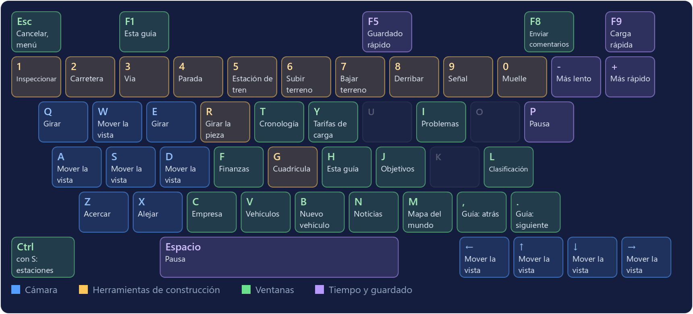

Controles
Teclado, ratón y panel táctil, en Windows y en Mac.
Las teclas de color hacen algo. El color indica de qué tipo.


Mover la vista
| Ratón | Panel táctil | Teclado | |
|---|---|---|---|
| Mover la vista | Arrastra con el botón derecho. Con Inspeccionar, también con el izquierdo. | Desliza dos dedos. | W A S D o las flechas. |
| Zoom | Gira la rueda. | Pellizca, o mantén Ctrl y desliza. | Z y X, o Page Up y Page Down. |
| Girar | Arrastra con el botón central, o mantén Alt y arrastra. | Mantén Alt y desliza hacia los lados. | Q y E, un cuarto de vuelta cada una. |
- La vista también se mueve cuando el ratón toca el borde de la pantalla. Se puede desactivar en Ajustes.
- ¿Prefieres hacer zoom deslizando en el panel táctil? Activa Desplazar con dos dedos hace zoom en Ajustes; entonces Ctrl y deslizar mueve la vista.
Construir e inspeccionar
- Botón izquierdo: usa la herramienta actual. Haz clic para colocar, arrastra para construir líneas y áreas.
- Clic derecho: cancela. El primer clic anula el arrastre en curso; el siguiente suelta la herramienta.
- Esc hace lo mismo, después cierra la ventana de encima y después abre el menú del juego.
- R gira una estación, un depósito o un aeropuerto antes de colocarlo. Con una herramienta de puente cambia el estilo del puente.
- Con Inspeccionar, el puntero se convierte en una mano sobre todo lo que se puede abrir, y un anillo marca el vehículo que abriría un clic. Donde coinciden varias cosas, haz clic otra vez para pasar a la siguiente.
- Deja el puntero sobre un vehículo y su ruta se dibuja en el mapa con el color de su empresa, con las paradas numeradas en orden. Sigue a la vista mientras la ventana del vehículo esté abierta.
- O recorre las capas del mapa: valoración de las estaciones, carga en espera, cobertura (qué casas e industrias alcanzan tus estaciones) y valor del suelo. El botón pequeño del minimapa las enumera, una leyenda explica los colores y Esc apaga la capa.
- La última capa, Problemas, pone una chincheta en todo lo que hay en la lista de Problemas: apunta a una para ver qué pasa y haz clic para abrirlo.
- Los puentes, los túneles, los depósitos, la catenaria, los aeropuertos, Nivelar terreno y las herramientas Conectar no tienen tecla: elígelos en su grupo de la barra de herramientas.
- Ctrl+Z deshace tu última construcción y devuelve el dinero. Consulta Terreno y derribos.
Windows y Mac
El juego es igual en los dos. Solo cambian estas teclas:
| Windows, Linux | Mac | |
|---|---|---|
| Estaciones | Ctrl+S | ⌘S |
| Líneas | Ctrl+L | ⌘L |
| Deshacer la construcción | Ctrl+Z | ⌘Z |
| Guardado rápido | F5 o Ctrl+Shift+S | ⇧⌘S |
| Carga rápida | F9 o Ctrl+Shift+L | ⇧⌘L |
| Pantalla completa | F11 o Alt+Enter | ⌃⌘F |
| Enviar comentarios | F8 | fn+F8, o el menú de la partida |
| Girar arrastrando | Alt | ⌥ Option |
| Clic derecho | Botón derecho | Botón derecho, o Ctrl + clic |
| Zoom deslizando en el panel táctil | Ctrl | ⌘ Command |
| Buscar un tema en esta guía | Ctrl+F | ⌘F |
Tiempo
- Espacio o P pone y quita la pausa. Puedes construir con el juego en pausa.
- + y - cambian la velocidad: normal, x2, x4, x8. A velocidad normal un día dura unos 2 segundos.